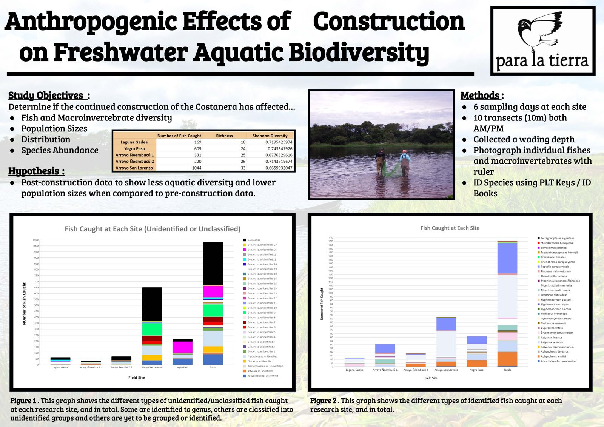
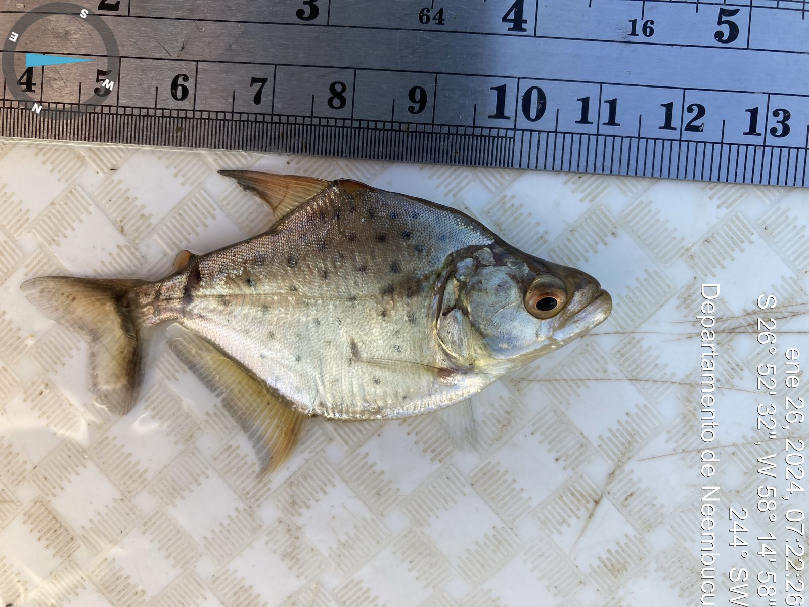
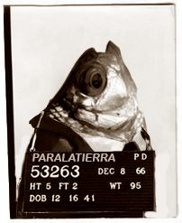

Para La Tierra, Pilar, Paraguay · 2024
Anthropogenic Effects of Construction on Freshwater Aquatic Biodiversity
Four months of river fieldwork in Pilar, Paraguay, testing whether building the Costanera changed the fish and invertebrates living there.
The story
Construction of the Costanera, a riverfront development, was still under way along the Paraguay River. The question was whether it had already changed life in the water: fish and macroinvertebrate diversity, population sizes, distribution and species abundance.
The hypothesis was that post-construction data would show less diversity and smaller populations than the pre-construction record.
The comparison depended on pre-construction data held by the municipality of Pilar. The municipality never shared it, so the study couldn't draw conclusions about the Costanera's effect. What remained was a record of the rivers as they are now, and four months of watching them change.
What I did
- Led the project design, site sampling, species identification and data analysis
- Sampled six sites: six sampling days per site, 10 transects of 10 m each, morning and afternoon, at wading depth
- Photographed every fish and macroinvertebrate against a ruler and identified species with PLT keys and ID books
- Made the research poster
Process
- Unidentified fish were grouped by genus or into provisional groups, with some left for later identification (poster figure 1)
- Water levels swung more than expected. On one very low-water day the fish crowded together and the catch was enormous. The shallow water also ran warm, which is hard on the fish.
- Identification was the hardest part: many fish were very small and looked alike.
- Returning to the same sites again and again made the change something you could feel through the work, not just read in the data.
Outcome
- 6,569 fish collected and cataloged, across 40+ species from 6 research sites (résumé)
- Research poster, February 2024
- No conclusions about construction impact: the municipality of Pilar didn't share the pre-construction baseline
- No Para La Tierra report was produced from the results
Reflection
This was hands-on experience of how the built environment affects native ecologies. The Costanera was built to protect the city and the people who live in it, but that protection didn't extend to life beyond humans. I resolved to always design with that life in mind.
Drawings


